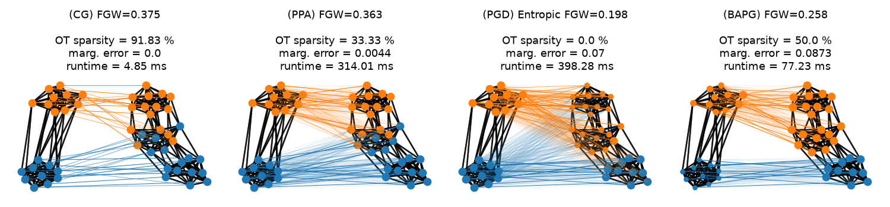

Note
Go to the end to download the full example code.
Comparison of Fused Gromov-Wasserstein solvers
Note
Example added in release: 0.9.1.
This example illustrates the computation of FGW for attributed graphs using 4 different solvers to estimate the distance based on Conditional Gradient [24], Sinkhorn projections [12, 51] and alternated Bregman projections [63, 64].
We generate two graphs following Stochastic Block Models further endowed with node features and compute their FGW matchings.
[12] Gabriel Peyré, Marco Cuturi, and Justin Solomon (2016), “Gromov-Wasserstein averaging of kernel and distance matrices”. International Conference on Machine Learning (ICML).
[24] Vayer Titouan, Chapel Laetitia, Flamary Rémi, Tavenard Romain and Courty Nicolas “Optimal Transport for structured data with application on graphs” International Conference on Machine Learning (ICML). 2019.
[51] Xu, H., Luo, D., Zha, H., & Carin, L. (2019). “Gromov-wasserstein learning for graph matching and node embedding”. In International Conference on Machine Learning (ICML), 2019.
[63] Li, J., Tang, J., Kong, L., Liu, H., Li, J., So, A. M. C., & Blanchet, J. “A Convergent Single-Loop Algorithm for Relaxation of Gromov-Wasserstein in Graph Data”. International Conference on Learning Representations (ICLR), 2023.
[64] Ma, X., Chu, X., Wang, Y., Lin, Y., Zhao, J., Ma, L., & Zhu, W. “Fused Gromov-Wasserstein Graph Mixup for Graph-level Classifications”. In Thirty-seventh Conference on Neural Information Processing Systems (NeurIPS), 2023.
# Author: Cédric Vincent-Cuaz <cedvincentcuaz@gmail.com>
#
# License: MIT License
# sphinx_gallery_thumbnail_number = 1
import numpy as np
import matplotlib.pylab as pl
from ot.gromov import (
fused_gromov_wasserstein,
entropic_fused_gromov_wasserstein,
BAPG_fused_gromov_wasserstein,
)
import networkx
from networkx.generators.community import stochastic_block_model as sbm
from time import time
Generate two graphs following Stochastic Block models of 2 and 3 clusters.
np.random.seed(0)
N2 = 20 # 2 communities
N3 = 30 # 3 communities
p2 = [[1.0, 0.1], [0.1, 0.9]]
p3 = [[1.0, 0.1, 0.0], [0.1, 0.95, 0.1], [0.0, 0.1, 0.9]]
G2 = sbm(seed=0, sizes=[N2 // 2, N2 // 2], p=p2)
G3 = sbm(seed=0, sizes=[N3 // 3, N3 // 3, N3 // 3], p=p3)
part_G2 = [G2.nodes[i]["block"] for i in range(N2)]
part_G3 = [G3.nodes[i]["block"] for i in range(N3)]
C2 = networkx.to_numpy_array(G2)
C3 = networkx.to_numpy_array(G3)
# We add node features with given mean - by clusters
# and inversely proportional to clusters' intra-connectivity
F2 = np.zeros((N2, 1))
for i, c in enumerate(part_G2):
F2[i, 0] = np.random.normal(loc=c, scale=0.01)
F3 = np.zeros((N3, 1))
for i, c in enumerate(part_G3):
F3[i, 0] = np.random.normal(loc=2.0 - c, scale=0.01)
# Compute pairwise euclidean distance between node features
M = (F2**2).dot(np.ones((1, N3))) + np.ones((N2, 1)).dot((F3**2).T) - 2 * F2.dot(F3.T)
h2 = np.ones(C2.shape[0]) / C2.shape[0]
h3 = np.ones(C3.shape[0]) / C3.shape[0]
Compute their Fused Gromov-Wasserstein distances
alpha = 0.5
# Conditional Gradient algorithm
print("Conditional Gradient \n")
start_cg = time()
T_cg, log_cg = fused_gromov_wasserstein(
M, C2, C3, h2, h3, "square_loss", alpha=alpha, tol_rel=1e-9, verbose=True, log=True
)
end_cg = time()
time_cg = 1000 * (end_cg - start_cg)
# Proximal Point algorithm with Kullback-Leibler as proximal operator
print("Proximal Point Algorithm \n")
start_ppa = time()
T_ppa, log_ppa = entropic_fused_gromov_wasserstein(
M,
C2,
C3,
h2,
h3,
"square_loss",
alpha=alpha,
epsilon=1.0,
solver="PPA",
tol=1e-9,
log=True,
verbose=True,
warmstart=False,
numItermax=10,
)
end_ppa = time()
time_ppa = 1000 * (end_ppa - start_ppa)
# Projected Gradient algorithm with entropic regularization
print("Projected Gradient Descent \n")
start_pgd = time()
T_pgd, log_pgd = entropic_fused_gromov_wasserstein(
M,
C2,
C3,
h2,
h3,
"square_loss",
alpha=alpha,
epsilon=0.01,
solver="PGD",
tol=1e-9,
log=True,
verbose=True,
warmstart=False,
numItermax=10,
)
end_pgd = time()
time_pgd = 1000 * (end_pgd - start_pgd)
# Alternated Bregman Projected Gradient algorithm with Kullback-Leibler as proximal operator
print("Bregman Alternated Projected Gradient \n")
start_bapg = time()
T_bapg, log_bapg = BAPG_fused_gromov_wasserstein(
M,
C2,
C3,
h2,
h3,
"square_loss",
alpha=alpha,
epsilon=1.0,
tol=1e-9,
marginal_loss=True,
verbose=True,
log=True,
)
end_bapg = time()
time_bapg = 1000 * (end_bapg - start_bapg)
print(
"Fused Gromov-Wasserstein distance estimated with Conditional Gradient solver: "
+ str(log_cg["fgw_dist"])
)
print(
"Fused Gromov-Wasserstein distance estimated with Proximal Point solver: "
+ str(log_ppa["fgw_dist"])
)
print(
"Entropic Fused Gromov-Wasserstein distance estimated with Projected Gradient solver: "
+ str(log_pgd["fgw_dist"])
)
print(
"Fused Gromov-Wasserstein distance estimated with Projected Gradient solver: "
+ str(log_bapg["fgw_dist"])
)
# compute OT sparsity level
T_cg_sparsity = 100 * (T_cg == 0.0).astype(np.float64).sum() / (N2 * N3)
T_ppa_sparsity = 100 * (T_ppa == 0.0).astype(np.float64).sum() / (N2 * N3)
T_pgd_sparsity = 100 * (T_pgd == 0.0).astype(np.float64).sum() / (N2 * N3)
T_bapg_sparsity = 100 * (T_bapg == 0.0).astype(np.float64).sum() / (N2 * N3)
# Methods using Sinkhorn/Bregman projections tend to produce feasibility errors on the
# marginal constraints
err_cg = np.linalg.norm(T_cg.sum(1) - h2) + np.linalg.norm(T_cg.sum(0) - h3)
err_ppa = np.linalg.norm(T_ppa.sum(1) - h2) + np.linalg.norm(T_ppa.sum(0) - h3)
err_pgd = np.linalg.norm(T_pgd.sum(1) - h2) + np.linalg.norm(T_pgd.sum(0) - h3)
err_bapg = np.linalg.norm(T_bapg.sum(1) - h2) + np.linalg.norm(T_bapg.sum(0) - h3)
Conditional Gradient
It. |Loss |Relative loss|Absolute loss
------------------------------------------------
0|8.315073e-01|0.000000e+00|0.000000e+00
1|4.230771e-01|9.653798e-01|4.084301e-01
2|4.002371e-01|5.706628e-02|2.284004e-02
3|3.918958e-01|2.128454e-02|8.341322e-03
4|3.876436e-01|1.096937e-02|4.252204e-03
5|3.796686e-01|2.100516e-02|7.974999e-03
6|3.778419e-01|4.834523e-03|1.826685e-03
7|3.777768e-01|1.722967e-04|6.508968e-05
8|3.776672e-01|2.901746e-04|1.095894e-04
9|3.774612e-01|5.458848e-04|2.060503e-04
10|3.769622e-01|1.323750e-03|4.990035e-04
11|3.766887e-01|7.259258e-04|2.734481e-04
12|3.761737e-01|1.369044e-03|5.149983e-04
13|3.761716e-01|5.500298e-06|2.069056e-06
14|3.750109e-01|3.095192e-03|1.160731e-03
15|3.750109e-01|0.000000e+00|0.000000e+00
Proximal Point Algorithm
/home/circleci/project/ot/bregman/_sinkhorn.py:666: UserWarning: Sinkhorn did not converge. You might want to increase the number of iterations `numItermax` or the regularization parameter `reg`.
warnings.warn(
It. |Err
-------------------
0|1.539967e-02|
10|7.638810e-04|
20|6.649681e-04|
30|6.842292e-04|
40|7.744350e-04|
50|9.017392e-04|
60|1.044436e-03|
70|1.186820e-03|
80|1.277360e-03|
90|1.282340e-03|
100|1.298111e-03|
110|1.373666e-03|
120|1.371636e-03|
130|1.233489e-03|
140|1.021288e-03|
150|8.146403e-04|
160|6.905178e-04|
170|6.570578e-04|
180|6.648294e-04|
190|6.721680e-04|
It. |Err
-------------------
200|6.668599e-04|
210|6.515994e-04|
220|6.301749e-04|
230|5.990098e-04|
240|5.581623e-04|
250|5.214110e-04|
260|4.987179e-04|
270|4.863641e-04|
280|4.704941e-04|
290|4.377206e-04|
300|3.884281e-04|
310|3.377696e-04|
320|2.970507e-04|
330|2.612510e-04|
340|2.257534e-04|
350|1.974954e-04|
360|1.835060e-04|
370|1.805085e-04|
380|1.796476e-04|
390|1.741526e-04|
It. |Err
-------------------
400|1.617040e-04|
410|1.445865e-04|
420|1.280063e-04|
430|1.161671e-04|
440|1.092387e-04|
/home/circleci/project/ot/backend.py:1340: RuntimeWarning: divide by zero encountered in log
return np.log(a)
450|1.043495e-04|
460|9.850930e-05|
470|9.022828e-05|
480|7.970323e-05|
490|6.833951e-05|
500|5.796235e-05|
510|5.000860e-05|
520|4.501332e-05|
530|4.260911e-05|
540|4.198406e-05|
550|4.237582e-05|
560|4.327219e-05|
570|4.438231e-05|
580|4.555077e-05|
590|4.669214e-05|
It. |Err
-------------------
600|4.775384e-05|
610|4.869757e-05|
620|4.949040e-05|
630|5.010063e-05|
640|5.049580e-05|
650|5.064195e-05|
660|5.050348e-05|
670|5.004371e-05|
680|4.922606e-05|
690|4.801604e-05|
700|4.638444e-05|
710|4.431170e-05|
720|4.179367e-05|
730|3.884831e-05|
740|3.552199e-05|
750|3.189367e-05|
760|2.807420e-05|
770|2.419897e-05|
780|2.041362e-05|
790|1.685586e-05|
It. |Err
-------------------
800|1.363806e-05|
810|1.083555e-05|
820|8.483272e-06|
830|6.580149e-06|
840|5.098153e-06|
850|3.992175e-06|
860|3.207387e-06|
870|2.683105e-06|
880|2.355734e-06|
890|2.164600e-06|
900|2.059580e-06|
910|2.005214e-06|
920|1.979493e-06|
930|1.970002e-06|
940|1.970216e-06|
950|1.976925e-06|
960|1.988718e-06|
970|2.005159e-06|
980|2.026362e-06|
990|2.052782e-06|
Projected Gradient Descent
It. |Err
-------------------
0|5.189988e-02|
10|1.225506e-01|
20|1.189366e-01|
30|1.184469e-01|
40|1.188617e-01|
50|1.192199e-01|
60|1.192896e-01|
70|1.193006e-01|
80|1.193027e-01|
90|1.193031e-01|
100|1.193033e-01|
110|1.193033e-01|
120|1.193034e-01|
130|1.193034e-01|
140|1.193034e-01|
150|1.193034e-01|
160|1.193034e-01|
170|1.193034e-01|
180|1.193034e-01|
190|1.193034e-01|
It. |Err
-------------------
200|1.193034e-01|
210|1.193034e-01|
220|1.193034e-01|
230|1.193034e-01|
240|1.193034e-01|
250|1.193034e-01|
260|1.193034e-01|
270|1.193034e-01|
280|1.193034e-01|
290|1.193034e-01|
300|1.193034e-01|
310|1.193034e-01|
320|1.193034e-01|
330|1.193034e-01|
340|1.193034e-01|
350|1.193034e-01|
360|1.193034e-01|
370|1.193034e-01|
380|1.193034e-01|
390|1.193034e-01|
It. |Err
-------------------
400|1.193034e-01|
410|1.193034e-01|
420|1.193034e-01|
430|1.193034e-01|
440|1.193034e-01|
450|1.193034e-01|
460|1.193034e-01|
470|1.193034e-01|
480|1.193034e-01|
490|1.193034e-01|
500|1.193034e-01|
510|1.193034e-01|
520|1.193034e-01|
530|1.193034e-01|
540|1.193034e-01|
550|1.193034e-01|
560|1.193034e-01|
570|1.193034e-01|
580|1.193034e-01|
590|1.193034e-01|
It. |Err
-------------------
600|1.193034e-01|
610|1.193034e-01|
620|1.193034e-01|
630|1.193034e-01|
640|1.193034e-01|
650|1.193034e-01|
660|1.193034e-01|
670|1.193034e-01|
680|1.193034e-01|
690|1.193034e-01|
700|1.193034e-01|
710|1.193034e-01|
720|1.193034e-01|
730|1.193034e-01|
740|1.193034e-01|
750|1.193034e-01|
760|1.193034e-01|
770|1.193034e-01|
780|1.193034e-01|
790|1.193034e-01|
It. |Err
-------------------
800|1.193034e-01|
810|1.193034e-01|
820|1.193034e-01|
830|1.193034e-01|
840|1.193034e-01|
850|1.193034e-01|
860|1.193034e-01|
870|1.193034e-01|
880|1.193034e-01|
890|1.193034e-01|
900|1.193034e-01|
910|1.193034e-01|
920|1.193034e-01|
930|1.193034e-01|
940|1.193034e-01|
950|1.193034e-01|
960|1.193034e-01|
970|1.193034e-01|
980|1.193034e-01|
990|1.193034e-01|
Bregman Alternated Projected Gradient
It. |Err
-------------------
0|2.715028e-02|
10|1.148581e-03|
20|1.759689e-03|
30|2.281207e-03|
40|2.498534e-03|
50|3.004957e-03|
60|2.567294e-03|
70|2.127711e-03|
80|1.480526e-03|
90|1.512333e-03|
100|1.882655e-03|
110|1.601039e-03|
120|1.259955e-03|
130|1.221782e-03|
140|1.168877e-03|
150|9.742291e-04|
160|7.569120e-04|
170|6.294377e-04|
180|4.960473e-04|
190|3.647275e-04|
It. |Err
-------------------
200|2.849667e-04|
210|2.566858e-04|
220|3.055830e-04|
230|4.068117e-04|
240|4.885215e-04|
250|4.578219e-04|
260|3.111013e-04|
270|1.642458e-04|
280|7.949350e-05|
290|4.612945e-05|
300|4.983952e-05|
310|7.632109e-05|
320|1.124163e-04|
330|1.436293e-04|
340|1.555883e-04|
350|1.457440e-04|
360|1.232921e-04|
370|9.844321e-05|
380|7.664704e-05|
390|5.937003e-05|
It. |Err
-------------------
400|4.625514e-05|
410|3.644666e-05|
420|2.911968e-05|
430|2.362074e-05|
440|1.946767e-05|
450|1.631305e-05|
460|1.390685e-05|
470|1.206721e-05|
480|1.065960e-05|
490|9.582744e-06|
500|8.759238e-06|
510|8.129421e-06|
520|7.647190e-06|
530|7.277037e-06|
540|6.991789e-06|
550|6.770809e-06|
560|6.598521e-06|
570|6.463224e-06|
580|6.356147e-06|
590|6.270719e-06|
It. |Err
-------------------
600|6.202004e-06|
610|6.146283e-06|
620|6.100744e-06|
630|6.063248e-06|
640|6.032161e-06|
650|6.006233e-06|
660|5.984503e-06|
670|5.966231e-06|
680|5.950857e-06|
690|5.937955e-06|
700|5.927216e-06|
710|5.918422e-06|
720|5.911439e-06|
730|5.906202e-06|
740|5.902717e-06|
750|5.901048e-06|
760|5.901323e-06|
770|5.903729e-06|
780|5.908508e-06|
790|5.915957e-06|
It. |Err
-------------------
800|5.926420e-06|
810|5.940279e-06|
820|5.957936e-06|
830|5.979794e-06|
840|6.006224e-06|
850|6.037530e-06|
860|6.073900e-06|
870|6.115357e-06|
880|6.161707e-06|
890|6.212489e-06|
900|6.266935e-06|
910|6.323952e-06|
920|6.382124e-06|
930|6.439745e-06|
940|6.494888e-06|
950|6.545499e-06|
960|6.589521e-06|
970|6.625024e-06|
980|6.650352e-06|
990|6.664238e-06|
Fused Gromov-Wasserstein distance estimated with Conditional Gradient solver: 0.37501091329426905
Fused Gromov-Wasserstein distance estimated with Proximal Point solver: 0.3626038600398874
Entropic Fused Gromov-Wasserstein distance estimated with Projected Gradient solver: 0.1976412254049927
Fused Gromov-Wasserstein distance estimated with Projected Gradient solver: 0.2576834260827043
Visualization of the Fused Gromov-Wasserstein matchings
We color nodes of the graph on the right - then project its node colors based on the optimal transport plan from the FGW matchings We adjust the intensity of links across domains proportionaly to the mass sent, adding a minimal intensity of 0.1 if mass sent is not zero. For each matching, all node sizes are proportionnal to their mass computed from marginals of the OT plan to illustrate potential feasibility errors. NB: colors refer to clusters - not to node features
# Add weights on the edges for visualization later on
weight_intra_G2 = 5
weight_inter_G2 = 0.5
weight_intra_G3 = 1.0
weight_inter_G3 = 1.5
weightedG2 = networkx.Graph()
part_G2 = [G2.nodes[i]["block"] for i in range(N2)]
for node in G2.nodes():
weightedG2.add_node(node)
for i, j in G2.edges():
if part_G2[i] == part_G2[j]:
weightedG2.add_edge(i, j, weight=weight_intra_G2)
else:
weightedG2.add_edge(i, j, weight=weight_inter_G2)
weightedG3 = networkx.Graph()
part_G3 = [G3.nodes[i]["block"] for i in range(N3)]
for node in G3.nodes():
weightedG3.add_node(node)
for i, j in G3.edges():
if part_G3[i] == part_G3[j]:
weightedG3.add_edge(i, j, weight=weight_intra_G3)
else:
weightedG3.add_edge(i, j, weight=weight_inter_G3)
def draw_graph(
G,
C,
nodes_color_part,
Gweights=None,
pos=None,
edge_color="black",
node_size=None,
shiftx=0,
seed=0,
):
if pos is None:
pos = networkx.spring_layout(G, scale=1.0, seed=seed)
if shiftx != 0:
for k, v in pos.items():
v[0] = v[0] + shiftx
alpha_edge = 0.7
width_edge = 1.8
if Gweights is None:
networkx.draw_networkx_edges(
G, pos, width=width_edge, alpha=alpha_edge, edge_color=edge_color
)
else:
# We make more visible connections between activated nodes
n = len(Gweights)
edgelist_activated = []
edgelist_deactivated = []
for i in range(n):
for j in range(n):
if Gweights[i] * Gweights[j] * C[i, j] > 0:
edgelist_activated.append((i, j))
elif C[i, j] > 0:
edgelist_deactivated.append((i, j))
networkx.draw_networkx_edges(
G,
pos,
edgelist=edgelist_activated,
width=width_edge,
alpha=alpha_edge,
edge_color=edge_color,
)
networkx.draw_networkx_edges(
G,
pos,
edgelist=edgelist_deactivated,
width=width_edge,
alpha=0.1,
edge_color=edge_color,
)
if Gweights is None:
for node, node_color in enumerate(nodes_color_part):
networkx.draw_networkx_nodes(
G,
pos,
nodelist=[node],
node_size=node_size,
alpha=1,
node_color=node_color,
)
else:
scaled_Gweights = Gweights / (0.5 * Gweights.max())
nodes_size = node_size * scaled_Gweights
for node, node_color in enumerate(nodes_color_part):
networkx.draw_networkx_nodes(
G,
pos,
nodelist=[node],
node_size=nodes_size[node],
alpha=1,
node_color=node_color,
)
return pos
def draw_transp_colored_GW(
G1,
C1,
G2,
C2,
part_G1,
p1,
p2,
T,
pos1=None,
pos2=None,
shiftx=4,
switchx=False,
node_size=70,
seed_G1=0,
seed_G2=0,
):
starting_color = 0
# get graphs partition and their coloring
part1 = part_G1.copy()
unique_colors = ["C%s" % (starting_color + i) for i in np.unique(part1)]
nodes_color_part1 = []
for cluster in part1:
nodes_color_part1.append(unique_colors[cluster])
nodes_color_part2 = []
# T: getting colors assignment from argmin of columns
for i in range(len(G2.nodes())):
j = np.argmax(T[:, i])
nodes_color_part2.append(nodes_color_part1[j])
pos1 = draw_graph(
G1,
C1,
nodes_color_part1,
Gweights=p1,
pos=pos1,
node_size=node_size,
shiftx=0,
seed=seed_G1,
)
pos2 = draw_graph(
G2,
C2,
nodes_color_part2,
Gweights=p2,
pos=pos2,
node_size=node_size,
shiftx=shiftx,
seed=seed_G2,
)
for k1, v1 in pos1.items():
max_Tk1 = np.max(T[k1, :])
for k2, v2 in pos2.items():
if T[k1, k2] > 0:
pl.plot(
[pos1[k1][0], pos2[k2][0]],
[pos1[k1][1], pos2[k2][1]],
"-",
lw=0.7,
alpha=min(T[k1, k2] / max_Tk1 + 0.1, 1.0),
color=nodes_color_part1[k1],
)
return pos1, pos2
node_size = 40
fontsize = 13
seed_G2 = 0
seed_G3 = 4
pl.figure(2, figsize=(15, 3.5))
pl.clf()
pl.subplot(141)
pl.axis("off")
pl.title(
"(CG) FGW=%s\n \n OT sparsity = %s \n marg. error = %s \n runtime = %s"
% (
np.round(log_cg["fgw_dist"], 3),
str(np.round(T_cg_sparsity, 2)) + " %",
np.round(err_cg, 4),
str(np.round(time_cg, 2)) + " ms",
),
fontsize=fontsize,
)
pos1, pos2 = draw_transp_colored_GW(
weightedG2,
C2,
weightedG3,
C3,
part_G2,
p1=T_cg.sum(1),
p2=T_cg.sum(0),
T=T_cg,
shiftx=1.5,
node_size=node_size,
seed_G1=seed_G2,
seed_G2=seed_G3,
)
pl.subplot(142)
pl.axis("off")
pl.title(
"(PPA) FGW=%s\n \n OT sparsity = %s \n marg. error = %s \n runtime = %s"
% (
np.round(log_ppa["fgw_dist"], 3),
str(np.round(T_ppa_sparsity, 2)) + " %",
np.round(err_ppa, 4),
str(np.round(time_ppa, 2)) + " ms",
),
fontsize=fontsize,
)
pos1, pos2 = draw_transp_colored_GW(
weightedG2,
C2,
weightedG3,
C3,
part_G2,
p1=T_ppa.sum(1),
p2=T_ppa.sum(0),
T=T_ppa,
pos1=pos1,
pos2=pos2,
shiftx=0.0,
node_size=node_size,
seed_G1=0,
seed_G2=0,
)
pl.subplot(143)
pl.axis("off")
pl.title(
"(PGD) Entropic FGW=%s\n \n OT sparsity = %s \n marg. error = %s \n runtime = %s"
% (
np.round(log_pgd["fgw_dist"], 3),
str(np.round(T_pgd_sparsity, 2)) + " %",
np.round(err_pgd, 4),
str(np.round(time_pgd, 2)) + " ms",
),
fontsize=fontsize,
)
pos1, pos2 = draw_transp_colored_GW(
weightedG2,
C2,
weightedG3,
C3,
part_G2,
p1=T_pgd.sum(1),
p2=T_pgd.sum(0),
T=T_pgd,
pos1=pos1,
pos2=pos2,
shiftx=0.0,
node_size=node_size,
seed_G1=0,
seed_G2=0,
)
pl.subplot(144)
pl.axis("off")
pl.title(
"(BAPG) FGW=%s\n \n OT sparsity = %s \n marg. error = %s \n runtime = %s"
% (
np.round(log_bapg["fgw_dist"], 3),
str(np.round(T_bapg_sparsity, 2)) + " %",
np.round(err_bapg, 4),
str(np.round(time_bapg, 2)) + " ms",
),
fontsize=fontsize,
)
pos1, pos2 = draw_transp_colored_GW(
weightedG2,
C2,
weightedG3,
C3,
part_G2,
p1=T_bapg.sum(1),
p2=T_bapg.sum(0),
T=T_bapg,
pos1=pos1,
pos2=pos2,
shiftx=0.0,
node_size=node_size,
seed_G1=0,
seed_G2=0,
)
pl.tight_layout()
pl.show()

Total running time of the script: (0 minutes 2.662 seconds)